import os
import numpy as np
import cv2 # used only for loading the image
import matplotlib.pyplot as plt # used only for displaying the image
from tqdm import tqdmNon Local Means Denoising from Scratch
Image Processing
Custom Implemenation of the Non-Local Means Denoising Algorithm from Scratch
Importing the libraries
Setting up the images and required functions
# Loading the images in grayscale and then storing them in a list for subsequent processing.
img_size = 256 # setting the size of the image
imagefolder_path = os.path.join(os.getcwd(), 'Dataset', 'NLM') # path to the folder containing the images
image_set = []
# create list of only jpg and png images
image_list = [f for f in os.listdir(imagefolder_path) if f.endswith('.jpg') or f.endswith('.png')]
image_list.sort()
for image_name in image_list: # iterate over all the images in the folder
img = cv2.imread(os.path.join(imagefolder_path, image_name), cv2.IMREAD_GRAYSCALE) # read the image in grayscale
img = cv2.resize(img, (img_size, img_size))
image_set.append(img) # append the image to the list# this function is used to add gaussian noise to the image
def add_gaussian_noise(image, sigma):
noisy_image = image.copy() # copy the image
row, col = noisy_image.shape # get the shape of the image
gauss = np.random.normal(0, sigma, (row, col)) # generate the gaussian noise
noisy_image = noisy_image + gauss # add the noise to the image
return noisy_image # return the noisy image
# this function is used to get the PSNR value of the image compared to the original image
def getPSNR(original_image, noisy_image):
mse = np.mean((original_image - noisy_image)**2) # calculate the mean square error
if mse == 0: # if mse is 0, then return 100
return 100
return 20 * np.log10(255.0 / np.sqrt(mse)) # return the PSNR value
# this function is used to get the MSE value of the image compared to the original image
def getMSE(original_image, noisy_image):
mse = np.mean((original_image - noisy_image)**2) # calculate the mean square error
return mse
# this function is used to get MSE and PSNR values of the image compared to the original image
def getStats(original, noisy, denoised, display=False):
if display:
figure, axes = plt.subplots(1, 4, figsize=(15, 5))
axes[0].imshow(original, cmap='gray') # display the original image
axes[0].axis('off')
axes[0].set_title('Original Image', fontsize=10)
axes[1].imshow(noisy, cmap='gray') # display the noisy image
axes[1].axis('off')
axes[1].set_title('Noisy Image', fontsize=10)
axes[2].imshow(denoised, cmap='gray') # display the denoised image
axes[2].axis('off')
axes[2].set_title('Denoised Image', fontsize=10)
axes[3].imshow(np.abs(original-denoised), cmap='gray') # display the difference image
axes[3].axis('off')
axes[3].set_title('Difference Image', fontsize=10)
plt.show()
mse_noisy = getMSE(original, noisy) # get the MSE value of the noisy image
mse_denoised = getMSE(original, denoised) # get the MSE value of the denoised image
psnr_noisy = getPSNR(original, noisy) # get the PSNR value of the noisy image
psnr_denoised = getPSNR(original, denoised) # get the PSNR value of the denoised image
if display:
print(f'MSE of Noisy Image: {mse_noisy:.2f}')
print(f'MSE of Denoised Image: {mse_denoised:.2f}\n')
print(f'PSNR of Noisy Image: {psnr_noisy:.2f}')
print(f'PSNR of Denoised Image: {psnr_denoised:.2f}\n')
return mse_noisy, mse_denoised, psnr_noisy, psnr_denoised
SIGMA = [15, 45, 80] # list of sigma values
noisy15 = [] # list to store the noisy images with sigma = 15
noisy45 = [] # list to store the noisy images with sigma = 45
noisy80 = [] # list to store the noisy images with sigma = 80
# iterate over all the images in the image set and add the gaussian noise to them
for idx in range(len(image_set)):
fig, axes = plt.subplots(1, len(SIGMA)+1, figsize=(15, 5))
axes[0].imshow(image_set[idx], cmap='gray')
axes[0].axis('off')
axes[0].set_title('Original Image '+str(idx), fontsize=10)
for i, s in enumerate(SIGMA):
noisy_image = add_gaussian_noise(image_set[idx], s)
axes[i+1].imshow(noisy_image, cmap='gray')
axes[i+1].set_title(f'Sigma = {s}', fontsize=10)
axes[i+1].axis('off')
# store the noisy image in the corresponding list
if s == 15:
noisy15.append(noisy_image)
elif s == 45:
noisy45.append(noisy_image)
else:
noisy80.append(noisy_image)
plt.show() # display the images
# create a dictionary to store the noisy images
image_pool = {
0: image_set,
15: noisy15,
45: noisy45,
80: noisy80
}

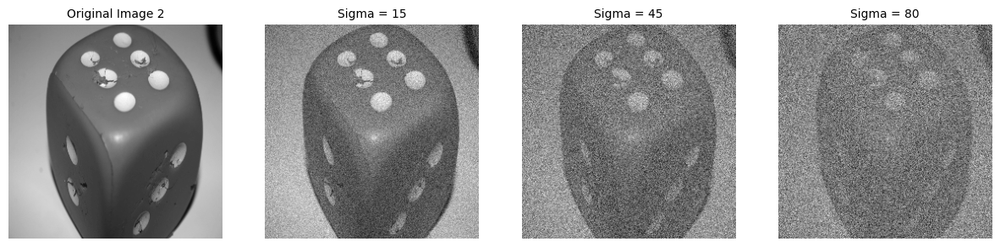

Defining the NLM functionalities
# funtion to add padding to the image
def getPaddedImage(image, padwidth):
paddedImage = np.zeros((image.shape[0] + 2 * padwidth, image.shape[1] + 2 * padwidth), dtype=np.uint8)
paddedImage[padwidth:padwidth+image.shape[0], padwidth:padwidth+image.shape[1]] = image
return paddedImage
# function to get the comparison value
def getComparison(image, X, Y, r, f, B, h, sigma):
Iw, w = 0, 0
for i in range(X, X + r - f, 1): # iterate over the window
for j in range(Y, Y + r - f, 1):
B0 = image[j:j+f, i:i+f] # get the comparison patch
euclideanDistance = np.sum(np.square(B0 - B)) # calculate the euclidean distance
numerator = max(euclideanDistance - 2*sigma*sigma, 0)
w0 = np.exp(-1*(numerator/(h*h))) # calculate the weight
w += w0 # add the weight to the sum
f0 = int((f-1)/2)
Iw += w0*image[j + f0, i + f0]
I_cap = Iw/w # calculate the comparison value
return I_cap # return the comparison value
# function to apply the non local means
def NLM(image, r, f, h, sigma):
padwidth = int((r-1)/2) # calculate the padding width
image_padded = getPaddedImage(image, padwidth) # get the padded image
num_iters = image.shape[1]*image.shape[0] # calculate the number of iterations
result = np.zeros(image_padded.shape, dtype=np.uint8) # create a denoised image
with tqdm(total=num_iters) as pbar: # create a progress bar
# iterate over the image
for x in range(padwidth, padwidth + image.shape[1]):
for y in range(padwidth, padwidth + image.shape[0]):
X = x - padwidth # get the x coordinate of the comparison window
Y = y - padwidth # get the y coordinate of the comparison window
f0 = int((f-1)/2)
B = image_padded[y-f0 : y+f0+1, x-f0 : x+f0+1] # get the center patch
I_cap = getComparison(image_padded, X, Y, r, f, B, h, sigma) # get the comparison value between the center patch and other patches in the research window
result[y, x] = np.floor(I_cap) # update the denoised image
pbar.update(1) # update the progress bar
return result[padwidth:padwidth+image.shape[0],padwidth:padwidth+image.shape[1]] # return the denoised imagef_list = [3, 5, 7, 9] # list of comparison window sizes
r_list = [21, 35] # list of research window sizes
k_list = [0.05, 0.2, 0.35, 0.6] # list of k values
with open('results.csv', 'a') as file:
file.write('image,sigma,f,r,k,h,mse_noisy,mse_denoised,psnr_noisy,psnr_denoised\n')
for sigma in list(image_pool.keys()):
if sigma == 0:
continue
for img_index in range(len(image_pool[sigma])):
noisy_image = image_pool[sigma][img_index]
original_image = image_pool[0][img_index]
if sigma == 80: r = r_list[1]
else: r = r_list[0]
for f in f_list:
for k in k_list:
h = k*sigma
print(f'Image: {img_index}, sigma: {sigma}, f: {f}, r: {r}, k: {k}, h: {h}')
result = NLM(image=np.uint8(noisy_image), r=r, f=f, h=h, sigma=sigma)
stats = getStats(original_image, noisy_image, result, display=False)
# save the results in a csv file
with open('results.csv', 'a') as file:
file.write(f'{img_index},{sigma},{f},{r},{k},{h},{stats[0]},{stats[1]},{stats[2]},{stats[3]}\n')Analysis of the results obtained
import pandas as pd
import matplotlib.pyplot as plt
from matplotlib import rcParams
import numpy as np# open the csv file
df = pd.read_csv('results.csv')rcParams['axes.titlepad'] = 20 # padding for the plot title
# this funtion returns the anysis for the given image and sigma
def getAnanysis(image, sigma):
df0 = df[df['image'] == image]
df0_s = df0[df0['sigma'] == sigma]
df_max = df0_s[df0_s['psnr_denoised'] == df0_s['psnr_denoised'].max()]
df_max = df_max.rename(columns={'image': 'Image', 'sigma': 'Sigma', 'h': 'Optimum h', 'mse_noisy': 'MSE Noisy',
'f' : 'F', 'r' : 'R', 'k': 'K',
'mse_denoised': 'MSE Denoised', 'psnr_noisy': 'PSNR Noisy', 'psnr_denoised': 'PSNR Denoised'})
return df_max[0:1]
# this function returns the best analysis for the given image
def getBest(image):
df_result = pd.DataFrame()
df_result = pd.concat([df_result, getAnanysis(image, 15)], ignore_index=True)
df_result = pd.concat([df_result, getAnanysis(image, 45)], ignore_index=True)
df_result = pd.concat([df_result, getAnanysis(image, 80)], ignore_index=True)
return df_result
# this function plots the analysis for the given image, sigma and f values
def plotAnalysis(image, sigma, f_list):
fig, axes = plt.subplots(1, len(f_list), figsize=(15, 3))
for i, f in enumerate(f_list):
df0 = df[df['image'] == image]
df1 = df0[df0['f'] == f]
df2 = df1[df1['sigma'] == sigma]
axes[i].plot(df2['h'], df2['psnr_denoised'], label='sigma = ' + str(sigma), alpha=0.7)
df_max = df2[df2['psnr_denoised'] == df2['psnr_denoised'].max()]
axes[i].scatter(df_max['h'], df_max['psnr_denoised'], marker='o',label='Optimum h', color='black', s=20)
axes[i].set_xlabel('h')
axes[i].set_ylabel('PSNR')
axes[i].set_title('Image = ' + str(image) + ', sigma = ' + str(sigma) + ', f = ' + str(f), fontsize=10)
axes[i].legend()
axes[i].grid()
plt.tight_layout()
plt.show()
# this function plots the compiled analysis for the given image
def getAnalysis(image):
print('Plotting for Image ' + str(image), '\n')
sigmas = [15, 45, 80]
fs = [3, 5, 7, 9]
for s in sigmas:
plotAnalysis(image, s, fs)
plt.show()Image 0
getAnalysis(0)
print('\nOptimum stats of Image 0 for different Sigma values\n')
getBest(image = 0)Plotting for Image 0
Optimum stats of Image 0 for different Sigma values
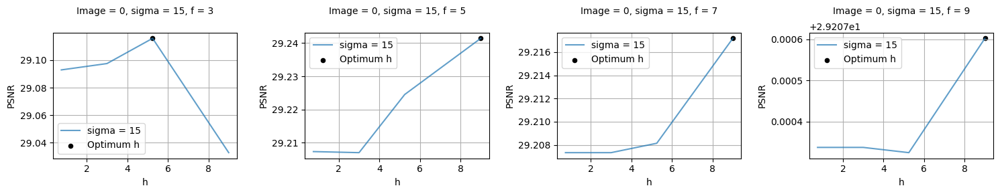
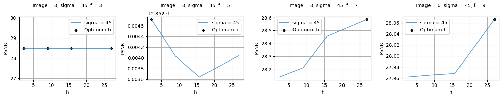
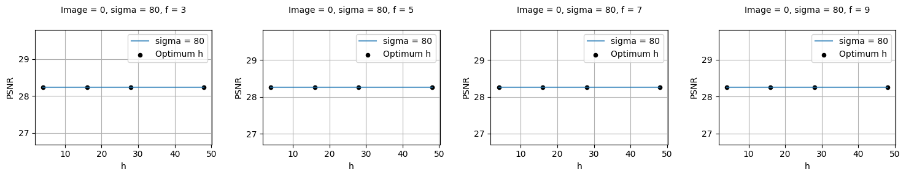
| Image | Sigma | F | R | K | Optimum h | MSE Noisy | MSE Denoised | PSNR Noisy | PSNR Denoised | |
|---|---|---|---|---|---|---|---|---|---|---|
| 0 | 0 | 15 | 5 | 21 | 0.60 | 9.0 | 225.750569 | 77.435028 | 24.594515 | 29.241429 |
| 1 | 0 | 45 | 7 | 21 | 0.60 | 27.0 | 2033.781032 | 90.043854 | 15.047762 | 28.586263 |
| 2 | 0 | 80 | 5 | 35 | 0.05 | 4.0 | 6362.757848 | 96.997910 | 10.094350 | 28.263180 |
# Denoising with the optimum values
image, sigma, f, r, h = 0, 15, 5, 21, 9
result = NLM(image=np.uint8(image_pool[sigma][image]), r=r, f=f, h=h, sigma=sigma)
stats = getStats(image_pool[0][image], image_pool[sigma][image], result, display=True)100%|██████████████████████████████████████████████████████████████████████████████████████████████████████████████████████████████████████████████| 65536/65536 [02:55<00:00, 374.15it/s]
MSE of Noisy Image: 224.86
MSE of Denoised Image: 77.76
PSNR of Noisy Image: 24.61
PSNR of Denoised Image: 29.22
Image 1
getAnalysis(1)
print('\nOptimum stats of Image 1 for different Sigma values\n')
getBest(image = 1)Plotting for Image 1
Optimum stats of Image 1 for different Sigma values

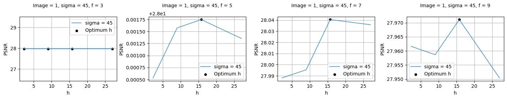

| Image | Sigma | F | R | K | Optimum h | MSE Noisy | MSE Denoised | PSNR Noisy | PSNR Denoised | |
|---|---|---|---|---|---|---|---|---|---|---|
| 0 | 1 | 15 | 5 | 21 | 0.60 | 9.00 | 225.393005 | 77.787003 | 24.601399 | 29.221733 |
| 1 | 1 | 45 | 7 | 21 | 0.35 | 15.75 | 2037.057186 | 102.102417 | 15.040771 | 28.040443 |
| 2 | 1 | 80 | 9 | 35 | 0.05 | 4.00 | 6422.667925 | 108.807724 | 10.053649 | 27.764206 |
# Denoising with the optimum values
image, sigma, f, r, h = 1, 15, 5, 21, 9
result = NLM(image=np.uint8(image_pool[sigma][image]), r=r, f=f, h=h, sigma=sigma)
stats = getStats(image_pool[0][image], image_pool[sigma][image], result, display=True)100%|██████████████████████████████████████████████████████████████████████████████████████████████████████████████████████████████████████████████| 65536/65536 [02:57<00:00, 369.16it/s]
MSE of Noisy Image: 223.92
MSE of Denoised Image: 77.42
PSNR of Noisy Image: 24.63
PSNR of Denoised Image: 29.24
Image 2
getAnalysis(2)
print('\nOptimum stats of Image 2 for different Sigma values\n')
getBest(image = 2)Plotting for Image 2
Optimum stats of Image 2 for different Sigma values
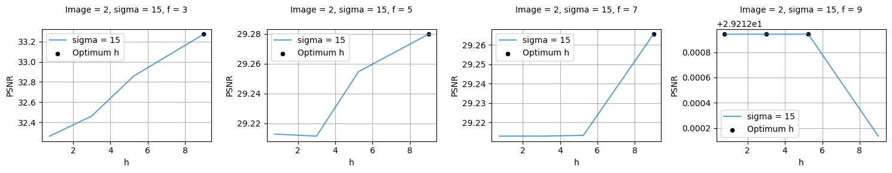

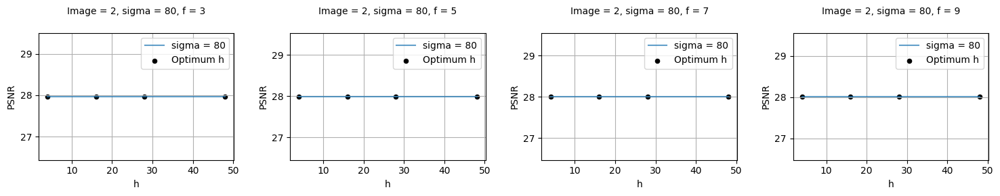
| Image | Sigma | F | R | K | Optimum h | MSE Noisy | MSE Denoised | PSNR Noisy | PSNR Denoised | |
|---|---|---|---|---|---|---|---|---|---|---|
| 0 | 2 | 15 | 3 | 21 | 0.60 | 9.0 | 224.381217 | 30.602051 | 24.620939 | 33.273298 |
| 1 | 2 | 45 | 7 | 21 | 0.60 | 27.0 | 2026.872861 | 82.821640 | 15.062539 | 28.949365 |
| 2 | 2 | 80 | 9 | 35 | 0.05 | 4.0 | 6411.461156 | 102.665375 | 10.061233 | 28.016564 |
# Denoising with the optimum values
image, sigma, f, r, h = 2, 15, 3, 21, 9
result = NLM(image=np.uint8(image_pool[sigma][image]), r=r, f=f, h=h, sigma=sigma)
stats = getStats(image_pool[0][image], image_pool[sigma][image], result, display=True)100%|██████████████████████████████████████████████████████████████████████████████████████████████████████████████████████████████████████████████| 65536/65536 [04:15<00:00, 256.58it/s]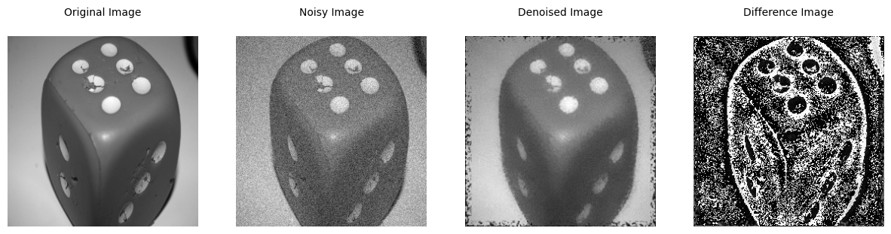
MSE of Noisy Image: 225.78
MSE of Denoised Image: 30.63
PSNR of Noisy Image: 24.59
PSNR of Denoised Image: 33.27
Image 3
getAnalysis(3)
print('\nOptimum stats of Image 3 for different Sigma values\n')
getBest(image = 3)Plotting for Image 3
Optimum stats of Image 3 for different Sigma values
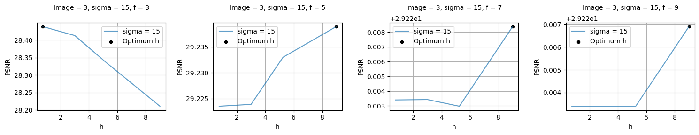
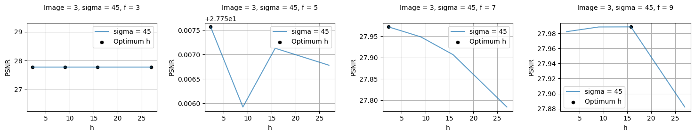
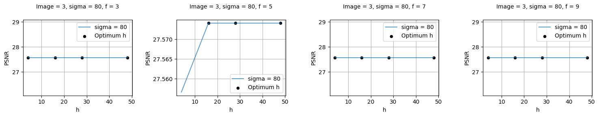
| Image | Sigma | F | R | K | Optimum h | MSE Noisy | MSE Denoised | PSNR Noisy | PSNR Denoised | |
|---|---|---|---|---|---|---|---|---|---|---|
| 0 | 3 | 15 | 5 | 21 | 0.60 | 9.00 | 223.490709 | 77.480606 | 24.638209 | 29.238874 |
| 1 | 3 | 45 | 9 | 21 | 0.35 | 15.75 | 2043.726862 | 103.326492 | 15.026575 | 27.988687 |
| 2 | 3 | 80 | 3 | 35 | 0.05 | 4.00 | 6381.607095 | 113.652237 | 10.081503 | 27.575024 |
# Denoising with the optimum values
image, sigma, f, r, h = 3, 15, 5, 21, 9
result = NLM(image=np.uint8(image_pool[sigma][image]), r=r, f=f, h=h, sigma=sigma)
stats = getStats(image_pool[0][image], image_pool[sigma][image], result, display=True)100%|██████████████████████████████████████████████████████████████████████████████████████████████████████████████████████████████████████████████| 65536/65536 [03:07<00:00, 350.23it/s]
MSE of Noisy Image: 221.88
MSE of Denoised Image: 77.22
PSNR of Noisy Image: 24.67
PSNR of Denoised Image: 29.25